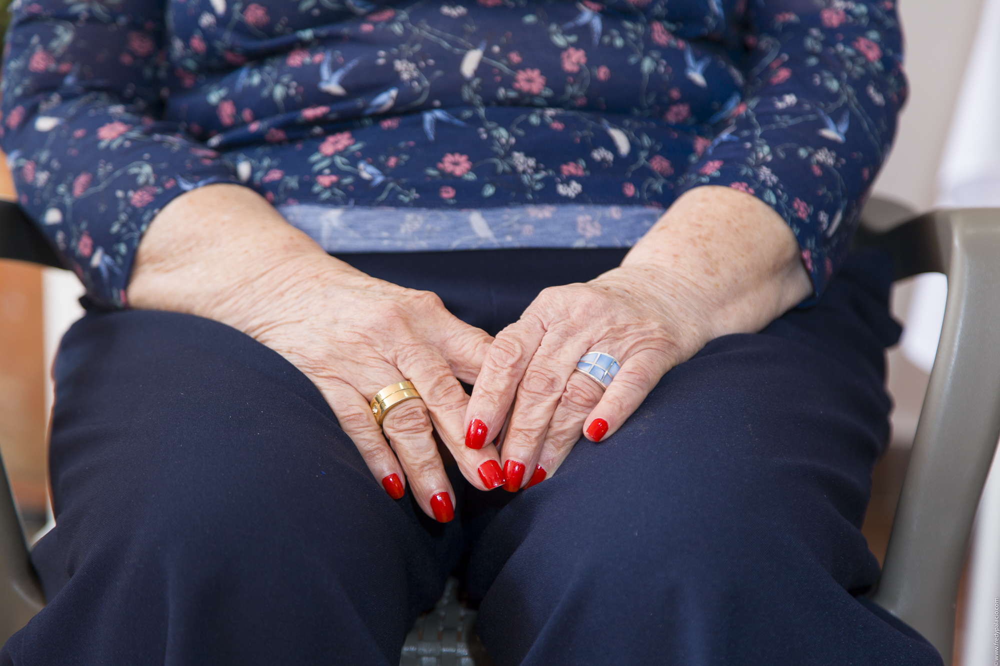
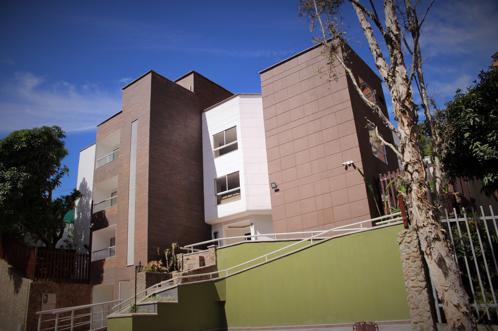
Tu refugio de
tranquilidad
y vida
en Medellín
Atención médica y de enfermería 24/7 en una sede campestre donde el afecto, la estimulación activa y el respeto crean un verdadero hogar.
Más de 9 años brindando
bienestar a las familias!
Propósito HSL:
En Hogar San Lucas transformamos el cuidado del adulto mayor en una experiencia de afecto, dignidad y estimulación diaria. Nos dedicamos a que cada residente mantenga su autonomía y que sus familias vivan con total serenidad.
Atención médica y enfermería permanente. Monitoreo clínico de signos vitales, administración rigurosa de medicamentos y nutrición geriátrica.
Instalaciones sin barreras, suites confortables, solárium climatizado y jardines seguros con fuentes de agua para disfrutar en familia.
Un acompañamiento integral
diseñado con calor de hogar
La combinación entre excelencia clínica médica y la calidez de un hogar auténtico.
Diagnóstico médico, nutrición adaptada y cuidado integral
Conocemos la historia de vida de tu familiar: sus gustos culinarios, rutinas de sueño y condiciones médicas para diseñar un plan individualizado y nutrición geriátrica que adapta recetas tradicionales cuidando su salud sin dejar de disfrutar.
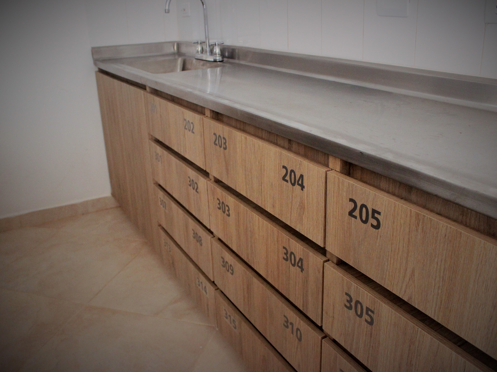
Mente activa, musicoterapia y acompañamiento espiritual
El envejecimiento activo es nuestra mayor convicción. Hábitos con propósito como jardinería, lectura, juegos de mesa, música de su época, fisioterapia y espacios de paz interior que fortalecen la memoria y el bienestar emocional.
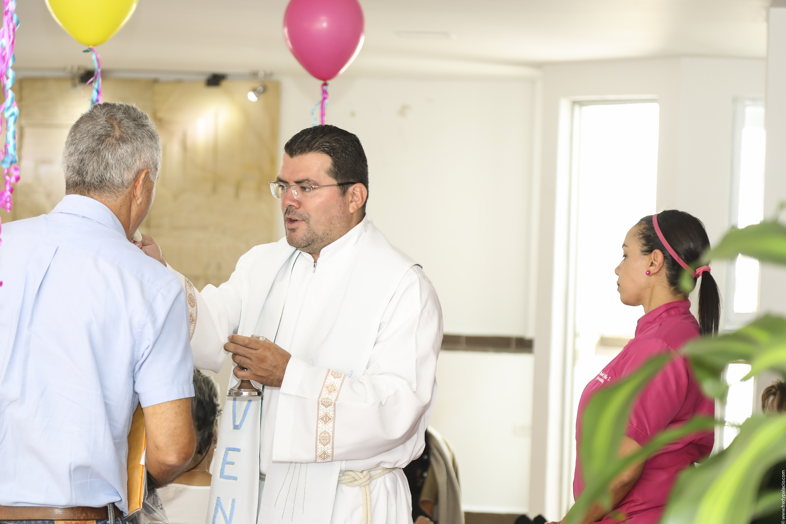
Un entorno campestre sin barreras y con puertas abiertas a la familia
Suites luminosas con camas ortopédicas y baños adaptados. Senderos rodeados de árboles nativos y fuentes de agua donde las familias pueden compartir almuerzos y tardes de sol sin horarios restrictivos.
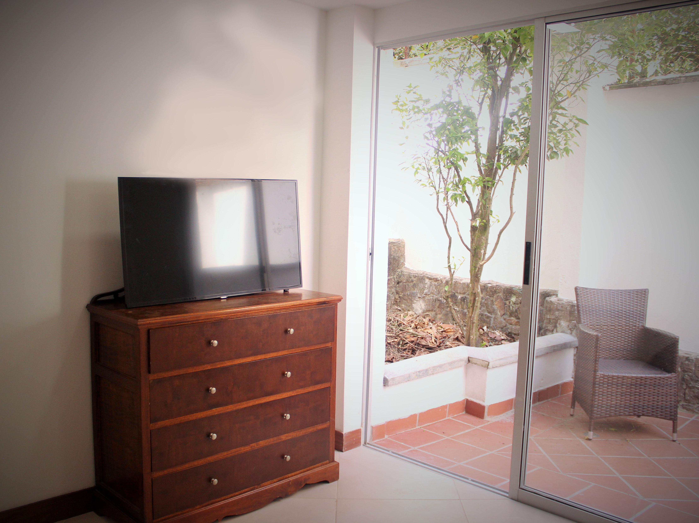
Nuestras Instalaciones en Medellín
Espacios pensados para la máxima seguridad, comodidad y bienestar de nuestros residentes.
Jardines y Fuente de Paz
Senderos planos rodeados de naturaleza y el murmullo relajante del agua, ideales para caminatas seguras y descanso matutino.
Suites Cómodas y Ventiladas
Habitaciones con luz natural, camas clínicas ergonómicas, pasamanos de seguridad y timbres de asistencia 24/7.
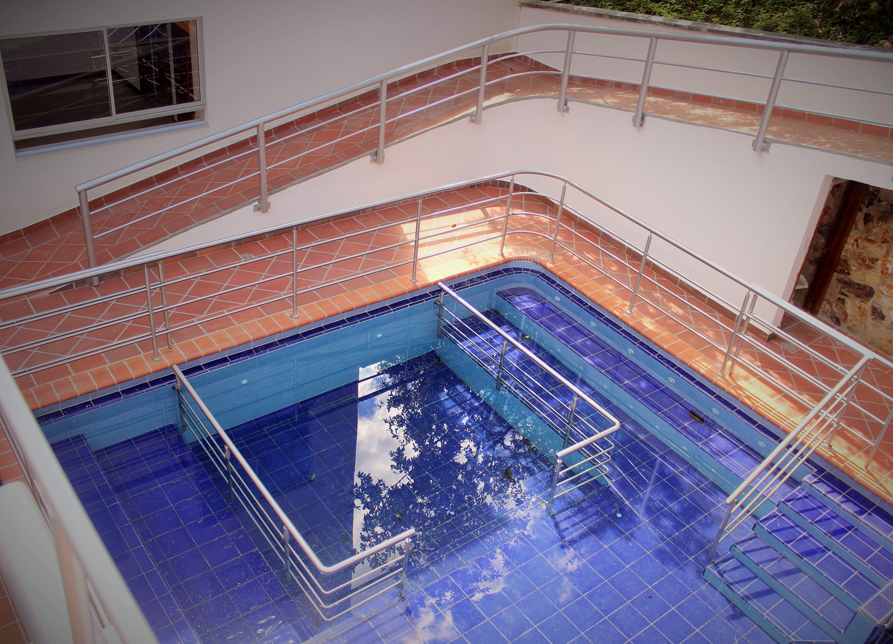
Solárium & Zona Húmeda
Espacio climatizado para asolearse plácidamente, recibir hidroterapia y disfrutar de tardes agradables de tertulia.
Puesto de Enfermería 24/7
Monitoreo continuo de signos vitales, control de medicamentos y articulación constante con médicos geriatras.
Salón de Estimulación & Arte
Área para pintura, manualidades, juegos de mesa, celebraciones y dinámicas guiadas por terapeutas.
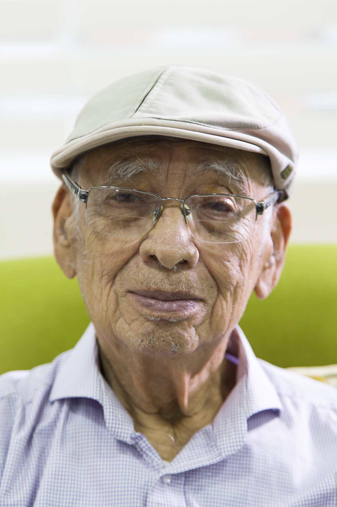
Salas de Estar y Comedor
Ambiente cálido y amigable para disfrutar de la comida casera recién preparada y compartir en comunidad.
Las Manos y Corazones que Cuidan:
nuestro equipo asistencial
Profesionales capacitados con amplia vocación humana que entregan su día a día al bienestar de cada residente.
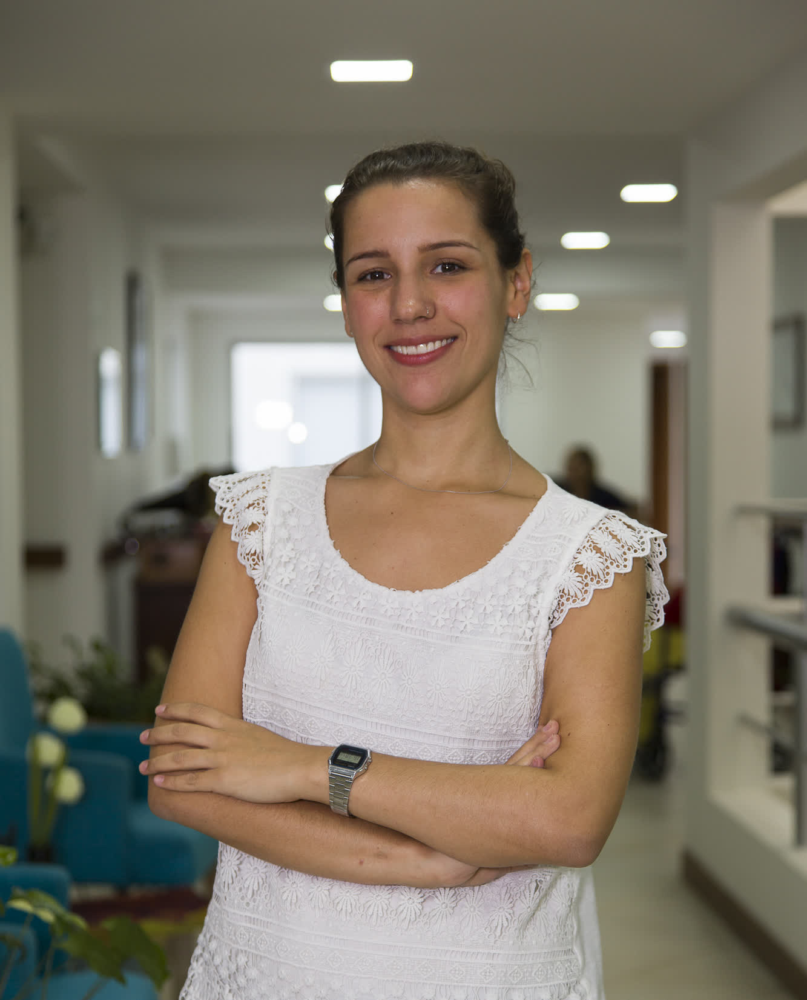
Gerontología & DirecciónMaría Clara
Directora Asistencial · 9 años en HSL«Cuidar con dignidad es comprender que cada residente tiene una historia viva que merece ser honrada con cariño y paciencia.»
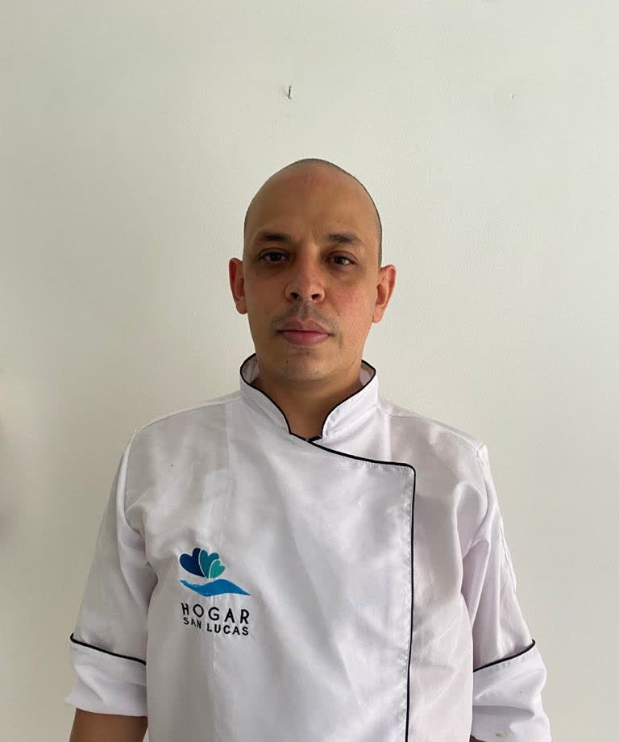
Medicina GeriátricaDr. Alejandro
Médico de Valoración Clínica«La prevención oportuna, la farmacovigilancia rigurosa y el afecto son la verdadera clave de la longevidad saludable.»
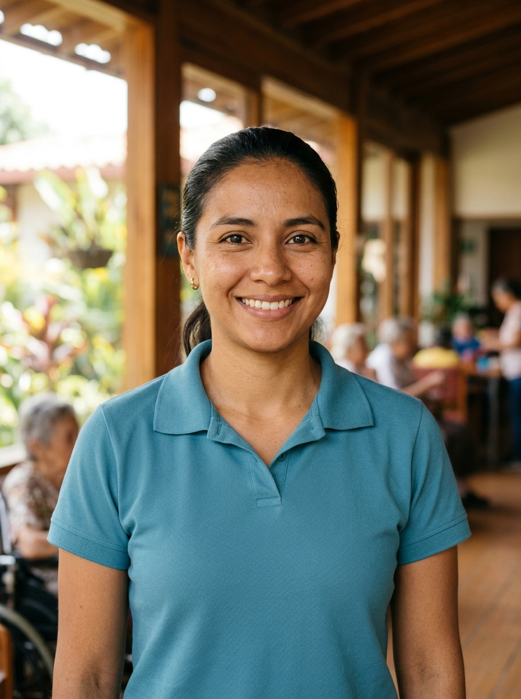
Fisioterapia FuncionalCamila
Fisioterapeuta & Terapia Ocupacional«Cada paso que damos en el jardín y cada ejercicio en el solárium devuelven autonomía, equilibrio y ganas de sonreír.»
Gabriela
Coordinadora de Enfermería Continua«Estar presentes día y noche nos convierte en una segunda familia que vela por su tranquilidad y bienestar absoluto.»
Ubicación Privilegiada en Medellín:
cerca de todo, lejos del ruido
Un santuario verde y campestre en Medellín, con conectividad inmediata a los principales centros comerciales y hospitales de alta complejidad del Valle de Aburrá.
C.C. El Tesoro
El Poblado · 3.2 kmTransversal Superior con acceso directo hacia la zona campestre sin semáforos.
C.C. Santafé
Av. El Poblado · 4.1 kmSubida por la Loma de Los Balsos y conexión inmediata al entorno natural.
Clínica Rosario & Vegas
Centros Médicos · 3.8 kmCorredor preferencial para atención de urgencias y citas especializadas.
Hosp. Pablo Tobón
Alta Complejidad · 11.5 kmConexión ágil por el corredor multimodal del Río Medellín / Autopista Sur.
Aeropuerto JMC
Rionegro · 19.0 kmDirecto por Túnel de Oriente y bajada por Las Palmas sin congestión urbana.
Cotizador Inteligente:
descubre el plan ideal en 3 pasos
Selecciona las necesidades de tu ser querido para recibir una propuesta clara, transparente y a la medida.
¿Cuál es el nivel de independencia de tu familiar?
Esto nos permite calcular el soporte clínico de enfermería y fisioterapia requerido.
¿Qué modalidad de estancia buscan?
Ofrecemos opciones flexibles adaptadas a las dinámicas de cada familia.
¿Qué tipo de suite o habitación prefieren?
Todas las habitaciones cuentan con iluminación natural, cama clínica ergonómica y llamado de auxilio.
Plan Residencia Plena & Bienestar
Diseñado a la medida para brindar el más alto nivel de confort, afecto y seguridad clínica continua.
Tu plan incluye:
- ✓ Enfermería profesional y auxiliar las 24 horas del día.
- ✓ Plan nutricional geriátrico en 5 tiempos elaborado por chef y nutricionista.
- ✓ Fisioterapia funcional y actividades de estimulación cognitiva de memoria.
- ✓ Habitación seleccionada con timbres asistenciales y baño adaptado.
- ✓ Acceso libre sin restricciones a solárium, terrazas y senderos campestres.
- ✓ Traslado y ambulancia de urgencias en convenio 24/7.
Agenda tu Visita en Vivo:
conoce tu nuevo hogar con un café
Selecciona la fecha y la franja horaria que mejor te convenga para coordinar un recorrido guiado por nuestros jardines, solárium y suites.
Franjas Horarias Disponibles:
Mitos y Verdades sobre
el envejecimiento activo
Derribando estigmas para comprender la vejez desde la ciencia y la dignidad.
«Es normal perder la memoria al envejecer»
El deterioro cognitivo severo no es parte del envejecimiento normal; mantener la mente activa con hábitos con propósito hace la diferencia.
«Una residencia aísla al abuelo de su familia»
Al liberar las cargas de cuidado clínico pesado en casa, el tiempo compartido con la familia pasa a ser de cariño, tertulia y abrazos.
«En la adultez mayor ya no se aprende nada nuevo»
La mente mantiene su curiosidad. Nuestros residentes descubren aficiones por el arte, la jardinería y la música cada día.
5 Preguntas para conectar con tus abuelos
Tómate un café con tu ser querido y hazle estas preguntas. Descubrirás anécdotas inolvidables de su vida.
Agendar una Visita
Momentos en Nuestra Comunidad:
síguenos en @hogarsanlucas
Un vistazo íntimo y cariñoso a la cotidianidad, hábitos con propósito y celebraciones en nuestra sede campestre.
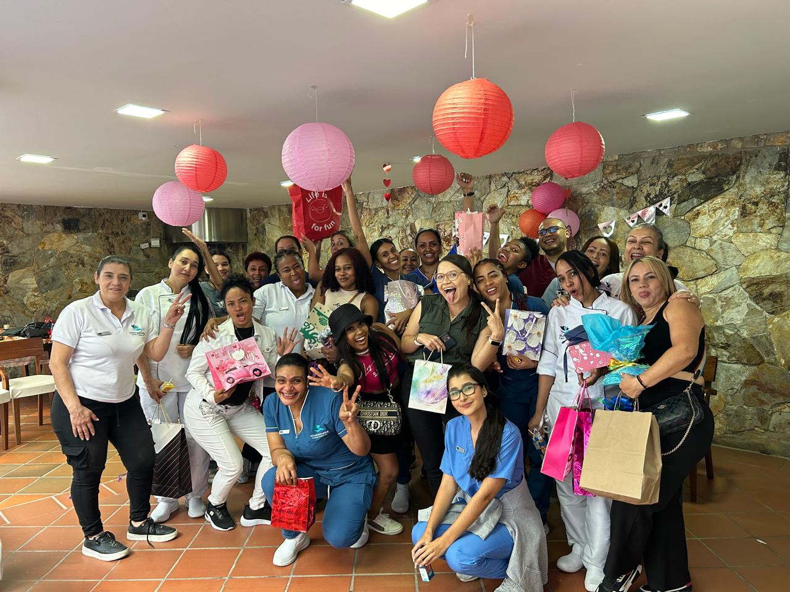
Hábitos con propósito: escuchar música de nuestra época y compartir en comunidad mejora el ánimo cada día. #HabitosConProposito #HogarSanLucas
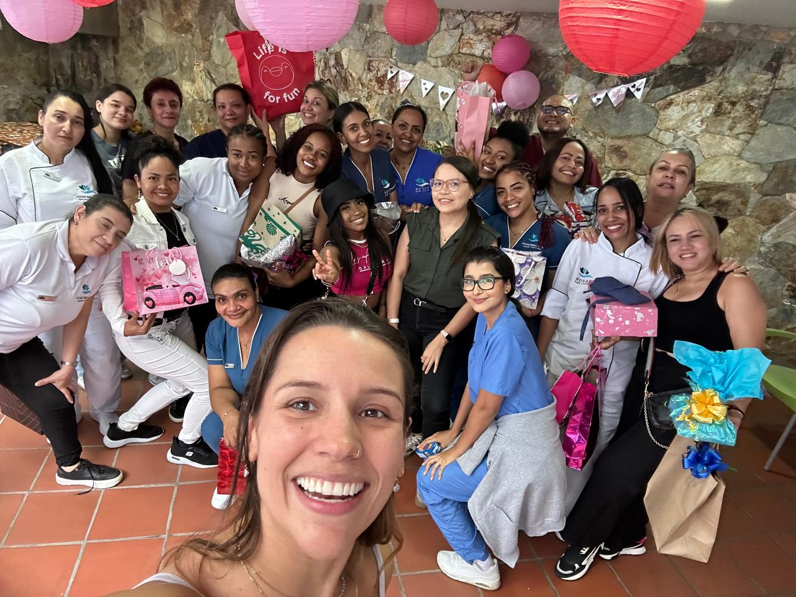
Nuestras salas de estar y salones múltiples son el escenario perfecto para que nazcan nuevas y hermosas amistades. #FamiliaHSL #EnvejecimientoDigno
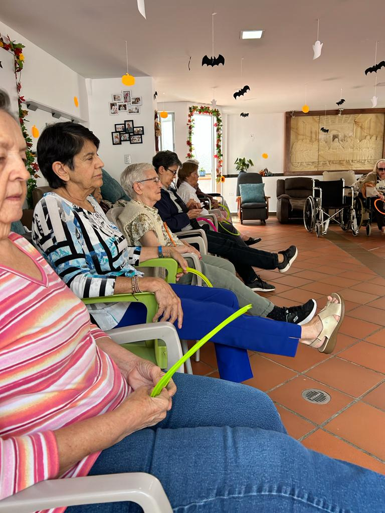
Mitos y verdades: mantener la mente activa con lectura, jardinería y juegos de mesa marca la diferencia. #MitosYVerdades #MenteActiva
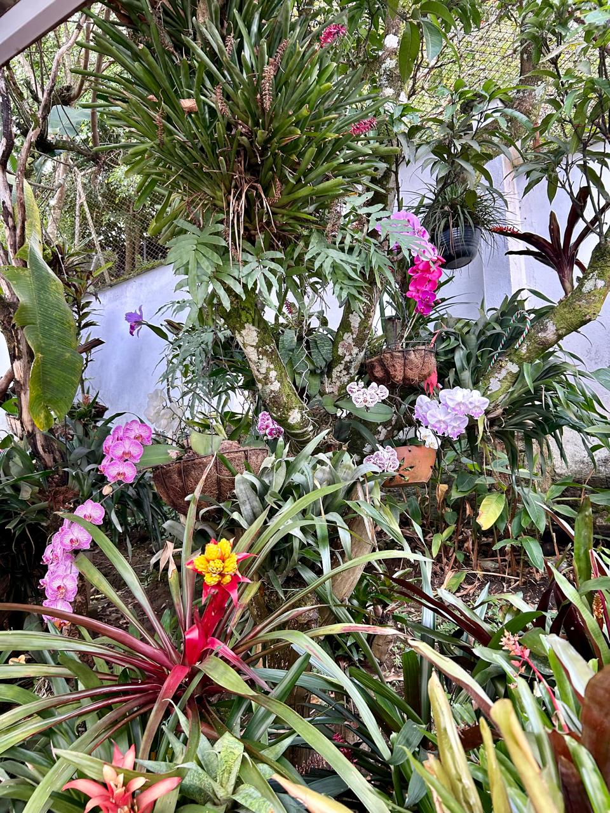
En Hogar San Lucas sabemos que la paz interior es fundamental. Un refugio de tranquilidad en Medellín. #TuRefugioDeTranquilidad #PazInterior
La tranquilidad de sentir que están en su propio hogar
Testimonios reales de familias que confían plenamente en Hogar San Lucas.
«Elegir Hogar San Lucas nos devolvió la paz a todos. Ver a mi mamá sonriendo en el jardín y recibiendo sus cuidados a tiempo es el mayor alivio para nuestra familia.»
«Mi padre recuperó su alegría gracias a las terapias físicas y al cariño de las enfermeras. La calidad humana de este equipo médico no tiene comparación.»
«Las instalaciones son preciosas y muy seguras. Cada fin de semana que voy a visitarlo disfruto de un ambiente campestre lleno de respeto y serenidad.»
Ven a conocer tu nuevo hogar
Agenda un recorrido guiado por nuestros jardines y habitaciones. Conoce a nuestro equipo y diseñemos juntos el plan de cuidado ideal para tu ser querido.